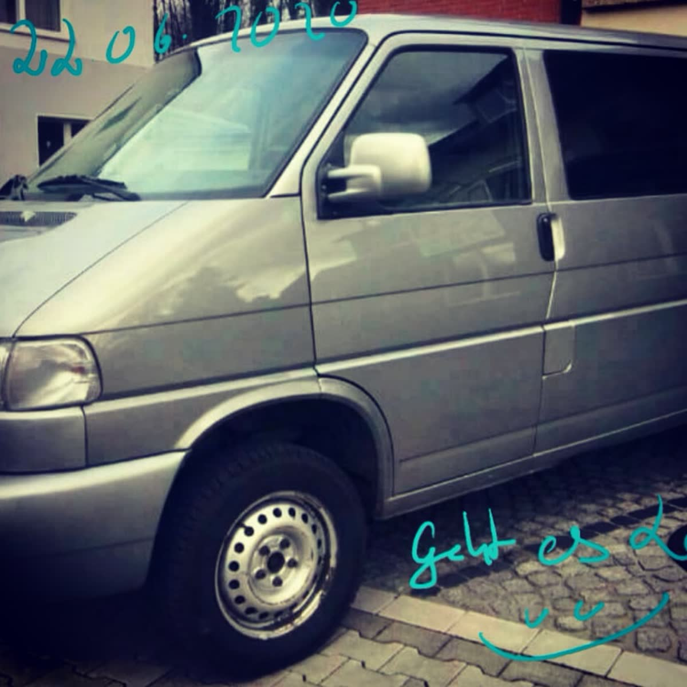
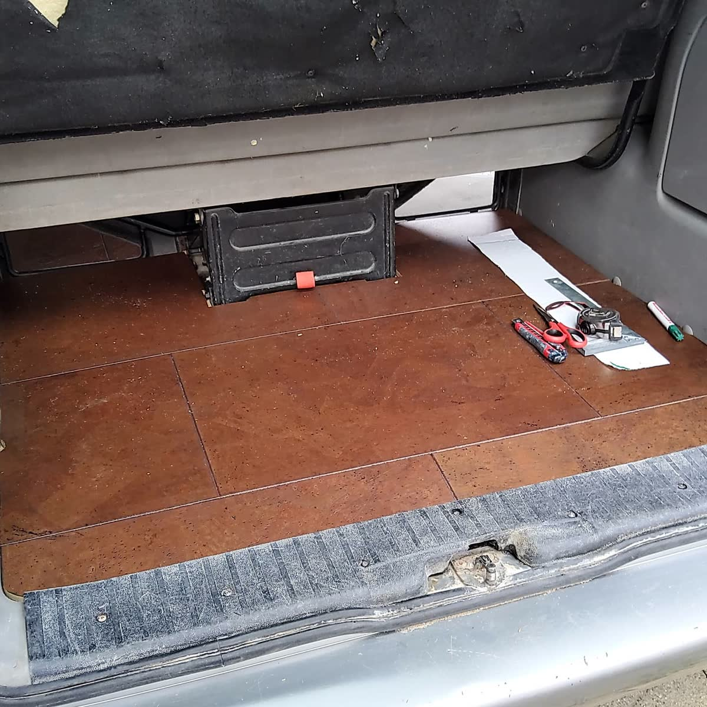

Tak właśnie zbudowałem podłogę — mój pierwszy T4
Cześć, tu Justine z Tussy Van! 💛 Dziś zabiorę was od samego początku — do mojego pierwszego T4, srebrnego VR6. Moja historia o życiu w vanie zaczęła się od niego, a pierwszym naprawdę dużym krokiem rozbudowy była podłoga. Brzmi niespektakularnie? Ale to fundament wszystkiego, co nastąpi później — i szczerze mówiąc, moment, gdy van powoli stał się moim domem.

VW T4 Caravelle, wyprodukowany w 1998 roku, z silnikiem VR6 i bagażnikiem dachowym na dachu. Z zewnątrz niepozorny srebrny autobus — w środku biała kartka papieru czekająca, by stać się moim domem do powrotu.
Krok 1: Szablony, szablony, szablony
Podłoga T4 to wszystko, tylko nie prosta prostokątna skrzynka: nadkola, poręcze siedzenia, krawędzie progu i skośna tylna część niszczą każdy prosty panel. Moja najważniejsza rada na samym początku: Poświęć czas na szablony. Pracowałem ze starymi gazetami i kartonem, układałem je kawałek po kawałku na podłodze, składałem krawędzie i śledziłem kontury. Dzięki temu nawet najbardziej krzywe rogi można czysto narysować na papierze.

Krok 2: Przenieś i przytnij
Następnie przeniosłem szablony z tektury na elementy klikowe. Zaznacz kontur, wytnij go wycinarką lub wyrzynarką, testuj na prawdziwej krawędzi, dopasuj ją. Lepiej poprawić raz lub dwa razy więcej niż oddać element.

Krok 3: Pracuj w segmentach
Znam grunt nie ułożone w jednym kawałku, ale podzielone na kilka segmentów. Ma to dwie zalety: elementy wchodzą do samochodu tylko przez drzwi przesuwne, a poszczególne miejsca (np. nad schowkami lub baterią) pozostają dostępne. Dołożyłem do krawędzi klapy bagażnika, żeby nic się później nie chwiało ani nie stało.

Krok 4: Centralny element — podłoga z korkiem z izolacją
Teraz mój ulubiony szczegół — i powód, dla którego ta podłoga może robić więcej niż tylko dobrze wyglądać: zainstalowałem Korkowa podłoga w dekoracji orzecha włoskiego. Jest nieco grubsza niż zwykła podstawka kliku i ma dodatkowa warstwa korka jako izolacja. To właśnie robi różnicę: zatrzymuje więcej ciepła w samochodzie i spowalnia zimno, które w przeciwnym razie pojawiłoby się od dołu — w T4 to jest warte złota, zwłaszcza w chłodne noce. A ponieważ korek jest naturalnie ciepły i cichy, podłoga jest wygodna nawet boso.
Przeniosłem elementy kliknięcia bezpośrednio na oryginalny dywan samochodowy — oczywiście dokładnie wyczyszczone wcześniej. Dzięki temu dywan pozostaje na miejscu, oszczędza wysiłek i pełni rolę dodatkowej miękkiej, izolującej podkładki. Bez rozdzierań, bez przyklejania — po prostu czysta, ciepła baza na to, co przyjdzie później.

- Szablony z kartonu/gazet oszczędzają kosztownych cięć.
- Pracuj w segmentach — mieści się przez drzwi i pozostaje dostępna.
- Korkowa podłoga z izolacją korkową = ciepło od dołu, ciche i łatwe w pielęgnacji.
- Układane na czystym oryginalnym dywanie — oszczędza wysiłek i zapewnia dodatkową izolację.
Wkrótce dodam tutaj konkretne linki do produktów (niektóre reklamy/afiliacje).
To piętro było pierwszym krokiem w autobusie, który zabrał mnie przez niezliczone przygody. O wnętrzu VR6 — stacji wodnej, suchej toalecie rozdzielającej i elektryce bez energii słonecznej — możesz przeczytać w "T4 VR6 jako codzienny kempingowiec".
Do zobaczenia i szerokiej drogi,
Wasza Tussy 💛